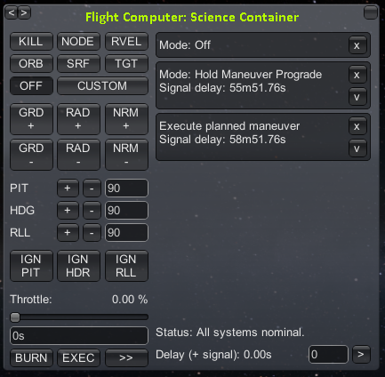

"beep... beep... beep... beep..." - Leonard Nimoy
Oh shit son! This page is still under development!
The Flight Computer
RemoteTech adds two new displays below the mission clock in the upper left corner. The first is the connection status. If it reads “D+”, the number after it is the signal delay in seconds. You cannot make the ship execute any command faster than this time, which increases as you go farther from mission control. If it reads “No connection”, you can’t send commands at all. Finally, “Local Control” means that the ship has either a crewed pod or a non-RemoteTech-compatible probe core, and you can control the ship with no delay as in the stock game.
The second element is a colored calculator icon – green for a working connection, red for a broken connection, and yellow for local control. Clicking the icon while green or red pulls up the flight computer window. You can’t use the flight computer if you have local control.
The basic flight computer window shows only the controls for operating it; clicking “�” will display the computer’s current state as well as a queue of any “instant” commands sent to it. Instant commands are anything you normally do with a single click or key press, including right-click actions, staging commands, action groups, and anything with a toggle key (RCS, SAS, landing gear…). They do not include slewing, translation, changing the throttle, or anything else that might involve holding down a key.
An instant command may be canceled by clicking the “X” button next to the command. Non-instant commands cannot be canceled.

Signal delay
All commands, instantaneous and otherwise, are subject to signal delay, whether or not the flight computer’s window is open. Instant commands will be shown in the queue along with the amount of time remaining until the probe receives the command. Once the time drops to zero, the command will be executed. Cancellations also count as commands and appear in the queue, along with a signal delay. Unless you are using manual delay (see below), there is no way to get a cancel command to the ship before it starts executing the original command.
If a command pulls up a window, you may press buttons in the window without signal delay. For example, if you have a two-minute delay and activate a science experiment, you have to only wait two minutes, not four, before the probe discards, saves, or transmits the data.
Manual delay
The text box in the lower right corner of the computer window lets you choose to delay an action by a specific amount. This is useful if you expect to go out of contact, but want the probe to carry out a command while out of reach. To set the manual delay, type a delay into the box and hit enter. Merely typing the delay does nothing. Numbers with no units will be interpreted as seconds; otherwise, you need to give exact units – “1m20s” will be parsed as one minute and twenty seconds, while “1m20” will be treated as bad input. Once a manual delay is set, any command, instant or not, will be delayed, whether the flight computer window is open or not. Remember to set your delay to zero when you’re done!
If the manual delay is less than the signal delay, the delay will be ignored – the probe will execute the command as soon as it gets it, just as if the delay were zero. If the manual delay is more than the signal delay, the computer queue will list two delays: the first is the signal delay, while the second is the amount the computer will wait after it gets the signal. Manual delays are always relative to the time the command was sent, not when it was received.
Example: a probe is ten light-minutes away and about to pass behind a planet for a burn, which is scheduled 20 minutes from now. Type “20m” into the delay box and hit enter to set it as the current delay. Then issue a command to (for example) point retrograde. The flight queue will read “9m56s+10m00s”, indicating that the signal will take just under ten minutes to reach the ship, followed by ten minutes before the ship acts on it.
Cancellations are not affected by manual delay, so a command will be removed from the queue as soon as the cancellation reaches the ship. This makes manual delay helpful if you want to edit a complex sequence of commands before they are executed.
Autopilot commands
The buttons on the left side of the screen control a simple autopilot. All buttons are instant actions, so they are saved in the queue and may be canceled. Like all commands, they are subject to signal delay and manual delay. The buttons are as follows:
Attitude Control
Pointing a ship manually with several minutes of lag is nearly impossible, so the computer can be programmed to hold a particular position. Choosing any attitude will override the previous attitude command. The path the ship takes in pointing toward a new position can be very roundabout, so be sure to allow plenty of time to turn the ship.

There are six basic directions, corresponding roughly to the six maneuver node axes. The exact meaning of each direction depends on the reference frame, chosen with one of four buttons in the flight computer window:
- ORB
- directions are relative to the ship’s orbital motion. This is the default if no reference frame is selected.
- SRF
- directions are relative to the ship’s surface motion.
- RVEL
- directions are relative to the ship’s motion past the current target.
- TGT
- directions are relative to the position of the current target.
| Direction | ORB Frame (Default) | SRF Frame | RVEL Frame | TGT Frame |
|---|---|---|---|---|
| GRD+ | Towards orbital velocity | Towards surface velocity | Towards target relative velocity | Towards target |
| GRD- | Away from orbital velocity | Away from surface velocity | Away from target relative velocity | Away from target |
| RAD+ | Outward from orbit | Outward from surface trajectory | Perpendicular to relative velocity, in orbital plane | Perpendicular to target, roughly facing away from sun |
| RAD- | Inward from orbit | Inward from surface trajectory | Perpendicular to relative velocity, in orbital plane | Perpendicular to target, roughly facing the sun |
| NRM+ | Up, out of orbital plane | North (south) from eastward (westward) trajectory | Perpendicular to relative velocity, out of orbital plane | Perpendicular to target |
| NRM- | Down, out of orbital plane | South (north) from eastward (westward) trajectory | Perpendicular to relative velocity, out of orbital plane | Perpendicular to target |
Clicking on a direction once it’s already selected will revert to GRD+. Clicking on a reference frame once it’s already selected will turn off the flight computer’s attitude control.
The other attitude options, which don’t work with the six direction buttons, are:
- KILL
- this attempts to hold the ship in a fixed direction. It is useful for maintaining attitude in the middle of a sequence.
- NODE
- this attempts to face the direction required for the next maneuver node.
- CUSTOM
- this attempts to keep the ship in a specific pitch, yaw, and roll, as chosen by the options below the six direction buttons.
Executing Maneuver Nodes
Pressing the “EXEC” button causes the ship to wait until it reaches a maneuver node, then slew to the maneuver position and start the engine for a precalculated amount of time. Once the length of the burn has passed, the flight computer will shut off the engine. Automatic node execution overrides any attitude control commands, and once the execution is done the flight computer switches off. The player may need to schedule post-burn commands such as KILL or toggle SAS to keep the ship pointed.
Note: the flight computer does not understand staging, and will continue to count down to the end of the burn even if the current fuel tanks are empty. Schedule any staging commands separately.
Because node execution does not wait for the ship to face the node before turning on the engine, players are strongly encouraged to use a NODE attitude command well before executing a maneuver node. The management is not responsible for any burns that had the opposite of their intended effect.
Unlike most commands, EXEC ignores manual delays – the time of the burn is set by the location of the maneuver node. If the time to the node is less than the signal delay, the execution command won’t be sent.
Manual Burns
Automatic node execution has a few limitations: it needs a well-defined maneuver node, making it difficult to do small velocity corrections, it doesn’t start the burn until it passes the node, which may make long burns less accurate, and it ignores any nodes after the first. For more control over burns, players may set the burn parameters by hand.
First, set a manual delay for the start of the burn. Adjust the throttle slider to the desired level (as a safety measure, the default is no thrust). In the box, type either the desired duration of the burn, or the desired delta-V (e.g., “100 m/s”). Clicking “BURN” will add the burn to the command queue, with signal delay and whatever manual delay was set.
Just like automatic node execution, the manual burn doesn’t include staging or attitude control. Those commands must be scheduled separately.